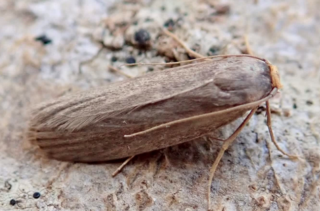

Achroia grisella es una pequeña polilla de coloración grisácea o beige, con cabeza amarillenta y alas estrechas. Sus larvas se desarrollan principalmente en panales de abejas, donde se alimentan de cera y otros materiales orgánicos. Es conocida por su asociación con las colmenas y su importancia en la apicultura.